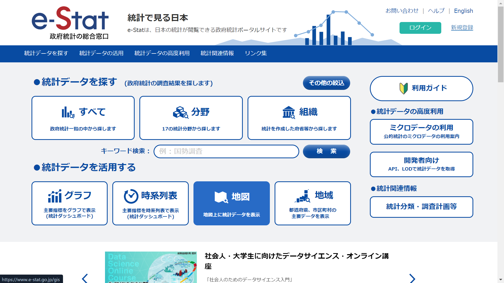
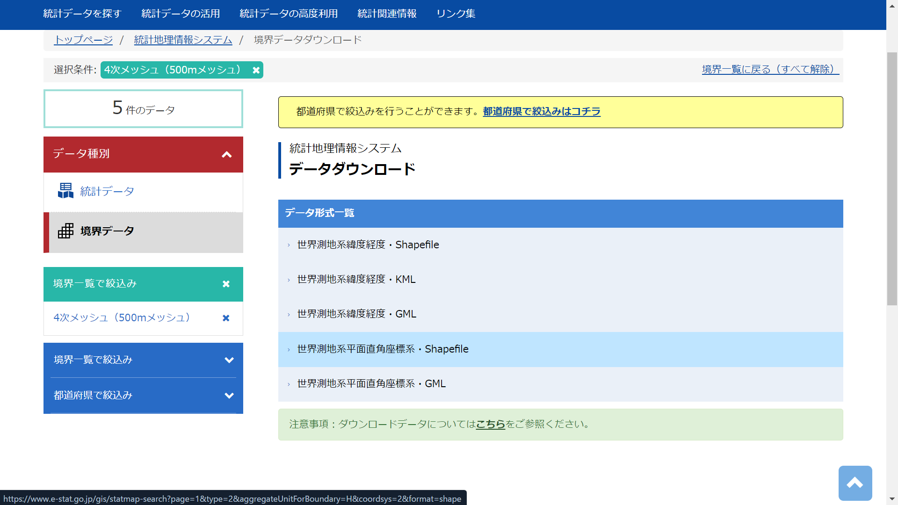

library(tidyverse)
library(sf)
library(here)空間結合
はじめに
今回は空間結合についてまとめます。
空間結合は、以下のような空間的な関係を利用します。
包含（Containment）
- あるフィーチャ1が他のフィーチャに完全に含まれている
交差（Intersection）
- フィーチャが部分的に重なっている
距離（Distance）
- フィーチャから特定の範囲内にある
隣接（Adjacency）
- フィーチャが隣接している
これらの関係性を利用して結合していきます。
大阪府で実践
今回は大阪府を例に、プロットしながら空間結合を実行します。
データのダウンロード
メッシュデータ
メッシュデータを使用します。メッシュデータは、地理空間情報を格子状の区画（メッシュ）に分割して管理・解析するためのデータ形式です。種類として、500mメッシュや1kmメッシュなどがあります。
- e-Stat にアクセスし、地図、境界データダウンロードと進む

メッシュの種類を選ぶ
小地域はメッシュではなく行政区域のデータ（市区町村や町丁・字など）です。
今回は4次メッシュ（500mメッシュ）を使用するので、4次メッシュを選んでください。
世界測地系平面直角座標系を選ぶ
いろいろありますが、下から2番目のものを選んでください。
座標系についてはまた別でまとめようと思います。

大阪府に該当するメッシュを選ぶ
- 上の画像にも出ているような「都道府県で絞込みはコチラ」というバナーがあるので、そこから大阪府を選びます。
ファイルをダウンロードして解凍
「世界測地系平面直角座標系・Shapefile」をクリックするとダウンロードできます。
表示されている2つ2をダウンロードして zip ファイルを展開し、フォルダの中身を「大阪府」フォルダに入れてください。
現段階では以下のようなディレクトリを想定しています。
/Working Directory
├── /data
│ └── /大阪府
│ ├── /MESH05135.shp
│ └── /MESH05235.shp
└── /code
└── /this_codeデータの読み込み
以下のコードで必要なライブラリとデータを読み込みます。